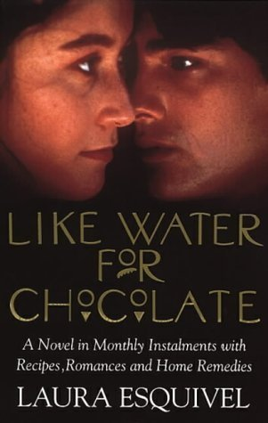

Never Let Me Go
Kazuo Ishiguro

Hailsham seems like a pleasant English boarding school, far from the influences of the city.
Its students are well tended and supported, trained in art and literature, and become just the sort of people the world wants them to be.
But, curiously, they are taught nothing of the outside world and are allowed little contact with it.
Como agua para chocolate #1
Like Water for Chocolate
Laura Esquivel, Carol Christensen (Translator) , Thomas Christensen (Translator)

Earthy, magical, and utterly charming, this tale of family life in turn-of-the-century Mexico became
a best-selling phenomenon with its winning blend of poignant romance and bittersweet wit.
The number one bestseller in Mexico and America for almost two years, and subsequently a bestseller around the world,
Like Water For Chocolate is a romantic, poignant tale, touched with moments of magic, graphic earthiness, bittersweet wit - and recipes.